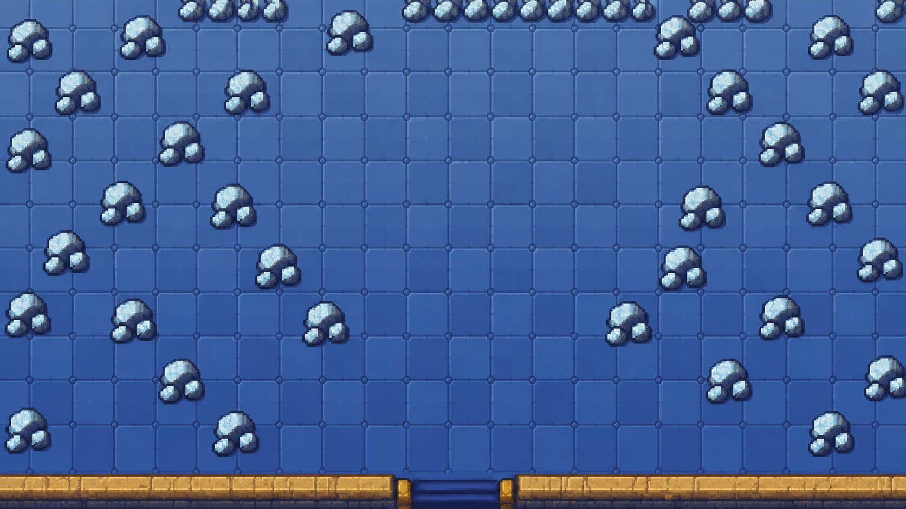

RAYQUAZA BOSS ARENA · AMBIENT MOTION STUDY
天空之柱 · 顶层战斗地图
《绿宝石》场景 · 动画概念
在原作空间里加一点呼吸感
开场先由完整云幕笼罩画面上半部，裂空座悬在云幕后方；前景云团向两侧拨开，完整云幕随后整体上升淡出，避免中央出现硬切断口。下半场地和玩家保持可见。点击按钮可播放或重播。

天空之柱 · 顶层
裂空座出现
原作画面参考：绿宝石天空之柱顶层实机记录 · 天空之柱资料动画为新增设计稿，点按钮可开关或重播